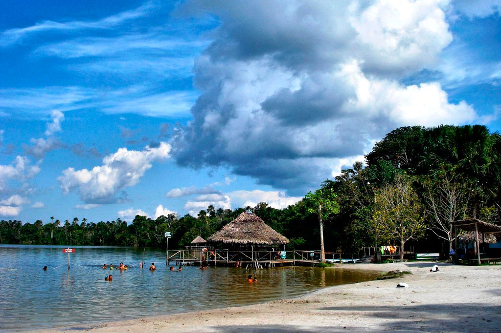
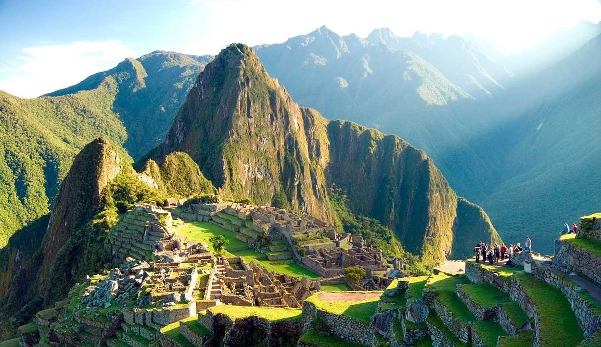

MI PÁGINA
LUGARES TURÍSTICOS |
||
|---|---|---|
|
VALLE SAGRADO DE LOS INCAS |



|
MACHU PICCHU |
|
Mágica área de quebradas, sitios arqueológicos y pintorescos pueblitos coloniales, que se suceden uno tras otros, habitados por comunidades indígenas, que han mantenido vivo en el tiempo su folclore y tradiciones. Sus principales enclaves corresponden al complejo arqueológico y poblado de Pisac, la localidad de Chinchero con sus famosas tejedoras y la zona arqueológica de Ollantaytambo, única ciudad incaica que se conserva prácticamente íntegra, y cuyas construcciones hoy en día son habitadas por sus descendientes. 
|
Impresionante ciudad incaica levantada por sobre los 2.360 metros sobre el nivel del mar, sobrecogedor paisaje de murallas, terrazas y rampas que parecieran esculpidas en la roca misma, inmersas entre majestuosos picos de montañas, acantilados y el verdor de la floresta amazónica. Declarada hoy Patrimonio Mundial por la UNESCO y una de las Siete Maravillas del Mundo Moderno, permite recrear a través de sus templos, palacios y escalinatas, lo que alguna vez fue la construcción más esplendorosa edificada por el imperio Inca, comprendiendo una extensa área de 530 metros de largo por 200 de ancho, que incluye al menos 172 recintos.  |
|
|
LINEAS DE NAZCA |
MÁNCORA |
|
|
Enigmático enclave arqueológico ubicado en las Pampas de Jumana, donde enormes geoglifos que ocupan superficies kilométricas, se extienden entre los cerros y la superficie del desierto, adoptando formas animales, vegetales y diseños geométricos. Declaradas Patrimonio de la Humanidad por la UNESCO, corresponden probablemente a uno de los lugares turísticos de Perú y posiblemente de América, que han generado mayor curiosidad y misticismo relativas a su autoría y finalidad. Si bien hoy se sabe que fueron trazadas por la cultura Nazca 200 años A.C., su razón de ser aún continúa en estudio, predominando las teorías de que habrían sido realizadas como un gigante calendario astronómico, que indicaría los diversos movimientos del sol, la luna y las constelaciones. 
|
Sin duda uno de los mejores lugares turísticos de Perú para disfrutar del descanso, entre kilómetros de playas de arenas blancas y aguas cálidas rodeadas de frondosa vegetación, olas excepcionales para la práctica de surf y un clima privilegiado, con temperaturas de verano prácticamente todo el año. El pueblo más bien pequeño, también tiene su interés, una extensa avenida principal, atiborrada de tiendas de artesanías y locales donde alquilar tablas de surf; y al menos una decena de bares que encienden las noches con ritmos reggae. 
|
|